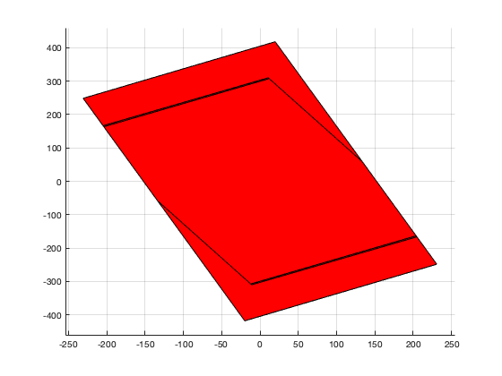

Contents
Building option struct
Set Run_* to 0 or 1 to either skip or run the indicated script. The dim and version fields are used to select the correct script with the name modes_[dim]_[ver].m which loads the modes into the workspace.
%Input program parameters. Indicate which UB to calculate options = struct(... 'Run_Cost_True', 0,... 'Run_Cost_Outer_Boundary', 0,... 'Run_Cost_Pre_Boundary', 0,... 'Run_Cost_Out_In', 0,... 'Run_Real_MDT', 0,... 'Run_Sandbox', 0,... 'Run_Zhang_Zhuagn_Braatz', 1,... 'force_rebuild_modes', 0,... %Force everything to rebuild 'dim', 2,... %Diminsion of the modes 'version', 3,... %The version of modes in set diminsion 'figs', 0,... %Should figure be plotted. 'Solver_ops', sdpsettings(... %Options used by yalmip 'verbose', 0,... 'solver','mosek'),... 'DEBUG', 0); %Extra error checks options = checkFigs(options); options = setGridEdge(options); options = makeMesh(options); %Make structures for the gamma values of each mode and the S_{i,j} values %for each switch gamma = struct; S_cost = struct;
Load the model data
This includes
- Dynamics, constraints, and costs
- MPC controllers
- Terminal and pre sets
- The norms, true cost, and lower bound at each grid point
- The points at which mode i is feaible
[m, c] = buildModes(options);
Loaded v.3 of 2D modes
Run Active Scripts
Call various functions to run algorithms related to switched MPC on the modes using the program options
if(options.Run_Cost_True) [gamma.True, S_cost.True] =... TrueParameters(c, m, options); end if(options.Run_Cost_Outer_Boundary) [c.Outer_Boundary, gamma.Outer_Boundary, S_cost.Outer_Boundary] =... BoundaryOuterUB(c, m, options); end if options.Run_Cost_Pre_Boundary [c.Pre_Boundary, gamma.Pre_Boundary, S_cost.Pre_Boundary] =... BoundaryPreUB(c, m, options); end if options.Run_Cost_Out_In [c.Out_In, gamma.Out_In, S_cost.Out_In] =... OutInUB(c, m, options); end if options.Run_Zhang_Zhuagn_Braatz Zhang_Zhuang_Braatz(m); end if options.Run_Sandbox sandbox(c, m, options); end
Warning: qhull precision warning: The initial hull is narrow (cosine of min. angle is 1.0000000000000000). A coplanar point may lead to a wide facet. Options 'QbB' (scale to unit box) or 'Qbb' (scale last coordinate) may remove this warning. Use 'Pp' to skip this warning. See 'Limitations' in qh-impre.htm. Warning: qhull precision warning: The initial hull is narrow (cosine of min. angle is 1.0000000000000000). A coplanar point may lead to a wide facet. Options 'QbB' (scale to unit box) or 'Qbb' (scale last coordinate) may remove this warning. Use 'Pp' to skip this warning. See 'Limitations' in qh-impre.htm. Warning: qhull precision warning: The initial hull is narrow (cosine of min. angle is 1.0000000000000000). A coplanar point may lead to a wide facet. Options 'QbB' (scale to unit box) or 'Qbb' (scale last coordinate) may remove this warning. Use 'Pp' to skip this warning. See 'Limitations' in qh-impre.htm. Warning: qhull precision warning: The initial hull is narrow (cosine of min. angle is 1.0000000000000000). A coplanar point may lead to a wide facet. Options 'QbB' (scale to unit box) or 'Qbb' (scale last coordinate) may remove this warning. Use 'Pp' to skip this warning. See 'Limitations' in qh-impre.htm. Warning: qhull precision warning: The initial hull is narrow (cosine of min. angle is 1.0000000000000000). A coplanar point may lead to a wide facet. Options 'QbB' (scale to unit box) or 'Qbb' (scale last coordinate) may remove this warning. Use 'Pp' to skip this warning. See 'Limitations' in qh-impre.htm. Warning: qhull precision warning: The initial hull is narrow (cosine of min. angle is 1.0000000000000000). A coplanar point may lead to a wide facet. Options 'QbB' (scale to unit box) or 'Qbb' (scale last coordinate) may remove this warning. Use 'Pp' to skip this warning. See 'Limitations' in qh-impre.htm. Corollary 1 - Mode 1 MDT: 4 (Stage 1), 3 (Stage 2+) - Mode 2 MDT: 9 (Stage 1), 8 (Stage 2+) Corollary 2 - Mode 1 MDT: 4 - Mode 2 MDT: 9 Corollary 3 Stage#|___1___2___3___4___5___6___7___8_ Mode 1| 4 3 3 3 2 3 3 Mode 2| 9 8 8 8 7 6 8 Corollary 4 - Mode 1 MDT: 8 (Stage 1), 3 (Stage 2+) - Mode 2 MDT: 10 (Stage 1), 1 (Stage 2+)
Setup Helper Functions
Helper functions used to set depended option values and check that values are valid.
function ops = checkFigs(ops) % CHECKFIGS Makes sure the figs field is only active when the diminsion of % the system is less than 3 ops.figs = ops.figs && (ops.dim<=2); end function ops = setGridEdge(ops) % SETGRIDEDGE Uses the version and dim feilds in ops to set the correct grid_edge % field. if (ops.dim==3 && ops.version == 1) ops.grid_edge = {-0.6:0.1:10,... %3.1 -0.2:.01:0.6,... -0.2:.01:0.6}; elseif (ops.dim==2 && (ops.version == 1 || ops.version == 2)) ops.grid_edge = -5:0.025:5; elseif (ops.dim==2 && ops.version == 3) ops.grid_edge = -1300:10:1300; end end % 'grid_edge', -0.5:0.05:3,... function ops = makeMesh(ops) % MAKEMESH Uses the grid_edge field to construct a DiscreteGrid object to % sample points at. if numel(ops.grid_edge)==1 || ~iscell(ops.grid_edge) ops.mesh = DiscreteGrid(ops.grid_edge, ops.dim); else ops.mesh = DiscreteGrid(ops.grid_edge); if ops.mesh.dim ~= ops.dim error("Diminsion of mesh is larger than diminsion of system!"); end end end